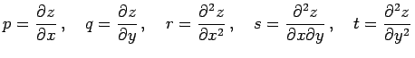

Inhalt Index DeskTop Bronstein

 Geometrie Differentialgeometrie Flächen Geodätische Linien auf einer Fläche
Geometrie Differentialgeometrie Flächen Geodätische Linien auf einer Fläche


Wenn eine Fläche in der expliziten Form z = f(x,y) (3.510) vorgegeben ist, dann lautet die Differentialgleichung der geodätischen Linien
| (3.538) |
Ist die Fläche in der Parameterform (3.511) vorgegeben, dann ist die Differentialgleichung der geodätischen Linien von komplizierterer Art.
Die Bedeutung von p, q, r, s, t entspricht (3.532b):
.